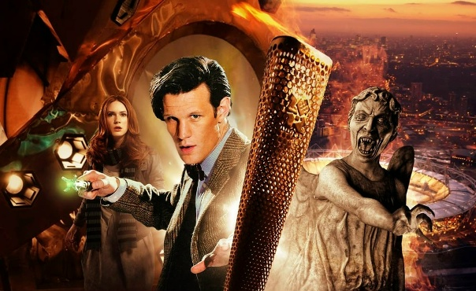

Эра Одиннадцатого Доктора
<<< НАЗАД ||| На вес золота ||| ДАЛЬШЕ >>>
MVO [BaibaKo], VO [Jetvis Studio] или Original [ENG]
Субтитры: Русские {TrueTransLate} или Английские

Сюжет происходит во время 5 сезона.
Good as Gold
мини-эпизод для Blue Peter
24 мая 2012
Формат: 3-минутный эпизод
| Варианты озвучек: | * MVO BaibaKo * VO Jetvis Studio |
|---|---|
| Скачивание и просмотр: |
Мини-эпизод с Одиннадцатым Доктором и Эми Понд, снятый по победившему в конкурсе сценарию учеников школы Ашден и показанный 24 мая 2012 года в передаче Blue Peter.

